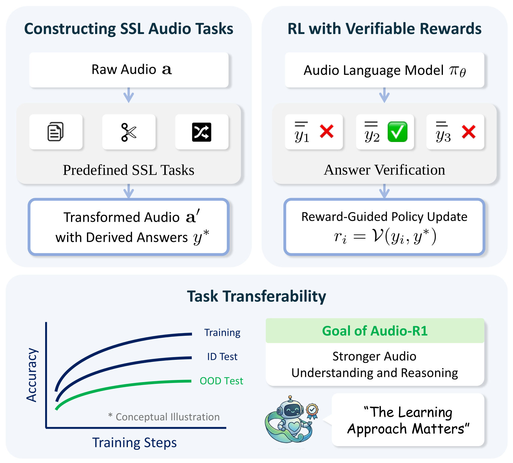
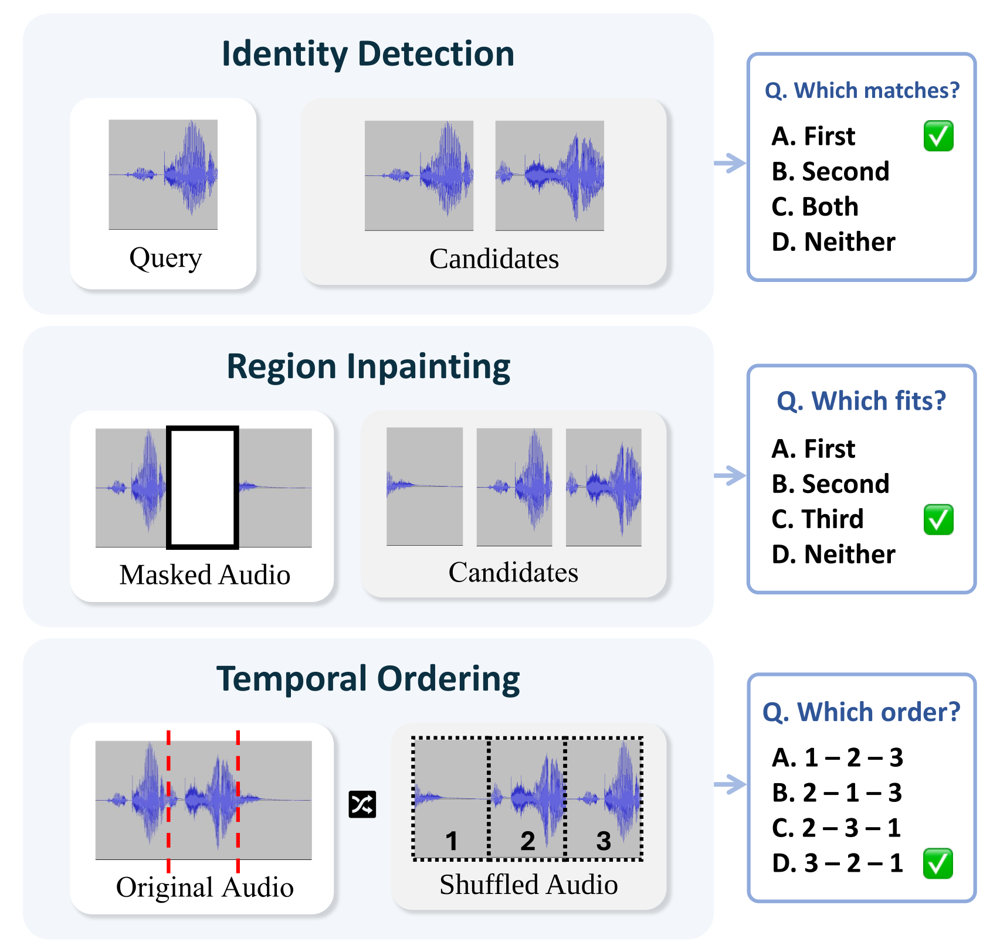
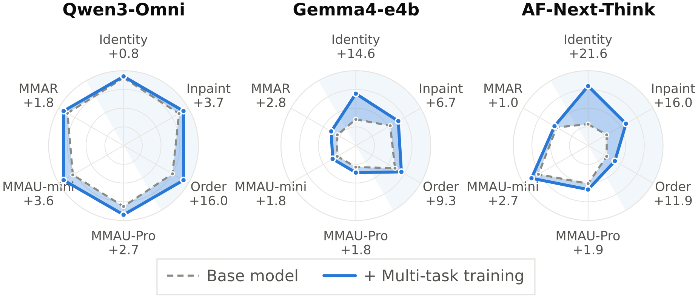
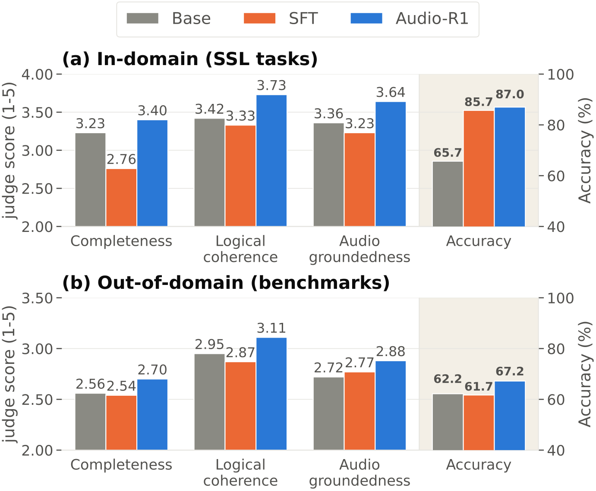

Audio-R1 derives verifiable rewards from self-supervised audio tasks. Because each answer is fixed while the audio is being constructed, rewards need no human annotation or external supervision.
Abstract
Reasoning is increasingly important for large audio-language models (LALMs), yet remains relatively underexplored compared with text-only and vision-language models. We introduce Audio-R1, a reinforcement learning post-training framework that revisits audio self-supervised learning (SSL) as a source of verifiable rewards for improving audio understanding and reasoning task performance. Audio-R1 uses answers automatically determined during the construction of self-supervised tasks to verify model responses and compute rewards.
Experiments across multiple LALMs and diverse audio benchmarks show consistent performance gains, while ablations demonstrate the benefits of individual SSL tasks and further improvements from joint training. While both supervised fine-tuning (SFT) and Audio-R1 improve SSL task accuracy, Audio-R1 further improves performance on downstream tasks distinct from the SSL training tasks. These results highlight the potential of RL post-training with self-supervised audio tasks to improve downstream performance and reasoning-trace quality.
Self-Supervised Tasks
Audio-R1 trains on three self-supervised tasks designed to encourage the use of acoustic, temporal, and semantic cues. Each task's answer is determined during construction, so a rule-based verifier can check any response and turn it directly into a reward.
🎯 Identity Detection
Given an anchor clip and candidate clips, decide which candidates come from the same source recording as the anchor.
🧩 Region Inpainting
A segment is removed from a clip; the model picks the candidate segment that fills the gap, using surrounding context and acoustic continuity.
⏱️ Temporal Ordering
Segments cut from one continuous recording are shuffled; the model recovers their original chronological order.

Task answers are determined during construction from the source-recording identity, the removed audio segment, or the original segment order.
Results
Audio-R1 improves every open-weight backbone we tested on all three out-of-domain benchmarks (MMAR, MMAU-mini, MMAU-Pro), even though none of these benchmarks are used during training.
Performance on MMAR, MMAU-mini, and MMAU-Pro
| Model | MMAR | MMAU-mini | MMAU-Pro |
|---|---|---|---|
| Closed-source models | |||
| GPT-4o mini Audio | 51.0 | 59.6 | 48.3 |
| GPT-4o Audio | 62.8 | 62.5 | 52.5 |
| Gemini 2.0 Flash | 65.5 | 70.5 | 55.7 |
| Gemini 2.5 Flash | 67.9 | 71.8 | 59.2 |
| Models finetuned with RL | |||
| Audio-Reasoner | 37.5 | 67.7 | 39.5 |
| Omni-R1 | 63.4 | 76.0 | – |
| Audio-Thinker | 65.3 | 76.5 | – |
| Open-weight models w/ and w/o Audio-R1 | |||
| Gemma4-e4b | 50.0 | 62.3 | 48.7 |
| + Audio-R1 | 52.8 (+2.8) | 64.1 (+1.8) | 50.5 (+1.8) |
| AF-Next-Think | 56.0 | 74.5 | 54.1 |
| + Audio-R1 | 57.0 (+1.0) | 77.2 (+2.7) | 56.0 (+1.9) |
| Qwen2.5-Omni | 58.2 | 73.4 | 55.1 |
| + Audio-R1 | 61.6 (+3.4) | 76.2 (+2.8) | 57.7 (+2.6) |
| Qwen3-Omni | 67.5 | 74.9 | 61.5 |
| + Audio-R1 | 69.3 (+1.8) | 78.5 (+3.6) | 64.2 (+2.7) |
Accuracy (%). Values in parentheses are gains over the corresponding backbone.

Performance before and after Audio-R1 across different LALMs, on three in-domain SSL tasks and three out-of-domain benchmarks.
SFT vs. Audio-R1
Both SFT and Audio-R1 learn the self-supervised tasks well. They differ in what happens outside those tasks: across training configurations, SFT degrades out-of-domain performance despite sizeable in-domain gains, while Audio-R1 turns in-domain gains into out-of-domain improvements.

Out-of-domain accuracy and reasoning-trace quality for SFT and Audio-R1.
@inproceedings{jeong2027audior1,
title = {Audio-R1: Audio Reasoning through Reinforcement Learning on Self-Supervised Tasks},
author = {Jeong, Jihoon and Ravanelli, Mirco and Wang, Zhepei and Subakan, Cem},
booktitle = {IEEE International Conference on Acoustics, Speech and Signal Processing (ICASSP)},
year = {2027}
}